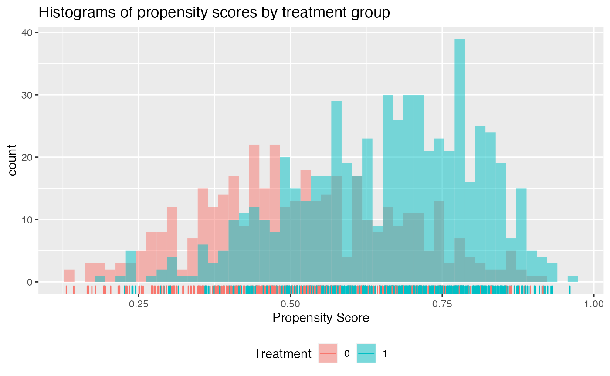

Usage of the Personalized Package
Jared Huling
2017-05-27
Introduction to personalized
The personalized package aims to provide an entire analysis pipeline that encompasses a broad class of statistical methods for subgroup identification / personalized medicine.
The general analysis pipeline is as follows:
- Construct propensity score function and check propensity score diagnostics
- Choose and fit a subgroup identification model
- Estimate the resulting treatment effects among estimated subgroups
- Visualize and examine model and subgroup treatment effects
The available subgroup identification models are those under the purview of the general subgroup identification framework proposed by Chen, et al. (2017). In this section we will give a brief summary of this framework and what elements of it are available in the personalized package.
In general we are interested in understanding the impact of a treatment on an outcome and in particular determining if and how different patients respond differently to a treatment in terms of their expected outcome. Assume the outcome we observe \(Y\) is such that larger values are preferable. In addition to the outcome, we also observe patient covariate information \(X \in \mathbb{R}^p\) and the treatment status \(T \in \{-1,1\}\), where \(T = 1\) indicates that a patient received the treatment, and \(T = -1\) indicates as patient observed the control. For the purposes of this package, we assume that the expected outcome conditional on the covariate and treatment status information can be represented by \[E(Y|X, T) = g(X) + T\Delta(X).\] Here, \(\Delta(X)\) represents the interaction between treatment and covariates and \(g(X)\) represents the main effects of the patient covariate information on the outcome.
We call the term \(\Delta(X)\) a benefit score, as it reflects how much a patient is expected to benefit from a treatment in terms of their outcome. For a patient with \(X = x\), if \(\Delta(x) > 0\) (assuming larger outcomes are better), the treatment is beneficial in terms of the expected outcome, and if \(\Delta(X) \leq 0\), the control is better than the treatment. Hence to identify which subgroup of patients benefits from a treatment, we seek to estimate \(\Delta(X)\).
In the framework of Chen, et al. (2017), there are two main methods for estimating subgroups. The first is called the weighting method. The weighting method estimates \(\Delta(X)\) by minimizing the following objective function with respect to \(f(X)\): \[L_W(f) = \frac{1}{n}\sum_{i = 1}^n\frac{(Y_i - T_i\times f(x_i)) ^ 2}{ {T_i\pi(x_i)+(1-T_i)/2} },\] where \(\pi(x) = Pr(T = 1|X = x)\) is the propensity score function. Here, \(\hat{f}\) is our estimated benefit score. Hence \(\hat{f} = \mbox{argmin}_f L_W(f)\) is our estimate of \(\Delta(X)\). If we want a simple functional form for the estimate \(\hat{f}\), we can restrict \(f\) such that it is a linear combination of the covariates, i.e. \(f(X) = X^T\beta\). Hence \(\hat{f}(X) = X^T\hat{\beta}\).
The A-learning estimator is the minimizer of \[L_A(f) = \frac{1}{n}\sum_{i = 1}^n (Y_i - {\{(T_i+1)/2 -\pi(x_i)\} } {\times f(x_i))^2}.\]
Choice of \(M\) function
The personalized package offers a flexible range of choices both for the form of \(f(X)\) and also for the loss function \(M(y, v)\). Every choice of \(f\) and \(M\) can be used for either the weighting method or for the A-learning method. In this package, we limit the use of \(M\) to natural choices corresponding to the type of outcome. For example, the squared error loss \(M(y, v) = (v - y) ^ 2\) corresponds to continuous responses; the logistic loss \(M(y, v) = y \cdot log(1 + \exp\{-v\})\) corresponds to binary outcomes, and the loss associated with the negative partial likelihood of the Cox proportional hazards model corresponds to time-to-event outcomes.
Choice of \(f\)
The choices of \(f\) offered in the personalized package are varied. A familiar, interpretable choice of \(f(X)\) is \(X^T\beta\). Also offered is an additive model, i.e. \(f(X) = \sum_{j = 1}^pf_j(X_j)\); this option is accessed through use of the mgcv package, which provides estimation procedures for generalized additive models (GAMs). Another flexible, but less interpretable choice offered here is related to gradient boosted decision trees, which model \(f\) as \(f(X) = \sum_{k = 1}^Kf_K(X)\), where each \(f_K\) is a decision tree model.
Variable Selection
For subgroup identification models with \(f(X) = X^T\beta\), the personalized package also allows for variable selection. Instead of minimizing \(L_W(f)\) or \(L_A(f)\), we instead minimize a penalized version: \(L_W(f) + \lambda||\beta||_1\) or \(L_A(f) + \lambda||\beta||_1\).
User Guide
The user guide for the personalized package will begin with a quick usage reference so users can quickly get started with a subgroup identification analysis. Following the quick usage reference, the user guide will expand on all the options available in the main functions and the implications of the various options.
Quick Usage Reference
First simulate some data where we know the truth. In this simulation, the treatment assignment depends on covariates and hence we must model the propensity score \(\pi(x) = Pr(T = 1 | X = x)\). In this simulation we will assume that larger values of the outcome are better.
library(personalized)
set.seed(123)
n.obs <- 1000
n.vars <- 50
x <- matrix(rnorm(n.obs * n.vars, sd = 3), n.obs, n.vars)
# simulate non-randomized treatment
xbetat <- 0.5 + 0.25 * x[,21] - 0.25 * x[,41]
trt.prob <- exp(xbetat) / (1 + exp(xbetat))
trt <- rbinom(n.obs, 1, prob = trt.prob)
# simulate delta
delta <- (0.5 + x[,2] - 0.5 * x[,3] - 1 * x[,11] + 1 * x[,1] * x[,12] )
# simulate main effects g(X)
xbeta <- x[,1] + x[,11] - 2 * x[,12]^2 + x[,13] + 0.5 * x[,15] ^ 2
xbeta <- xbeta + delta * (2 * trt - 1)
# simulate continuous outcomes
y <- drop(xbeta) + rnorm(n.obs)Creating and Checking Propensity Score Model
The first step in our analysis is to construct a model for the propensity score. In the personalized package, we need to wrap this model in a function which inputs covariate values and the treatment statuses and outputs a propensity score between 0 and 1. Since there are many covariates, we use the lasso to select variables in our propensity score model:
# create function for fitting propensity score model
prop.func <- function(x, trt)
{
# fit propensity score model
propens.model <- cv.glmnet(y = trt,
x = x,
family = "binomial")
pi.x <- predict(propens.model, s = "lambda.min",
newx = x, type = "response")[,1]
pi.x
}We then need to make sure the propensity scores have sufficient overlap between treatment groups. We can do this with the check.overlap() function, which plots densities or histograms of the propensity scores for each of the treatment groups:
check.overlap(x, trt, prop.func)
We can see that our propensity scores have common support.
Fitting Subgroup Identification Model
The next step is to choose and fit a subgroup identification model. In this example, the outcome is continuous, so we choose the squared error loss function. We also choose the model type (either the weighting or the A-learning method). The main funciton for fitting subgroup identification models is fit.subgroup. Since there are many covariates, we choose a loss function with a lasso penalty to select variables. The underlying fitting function here is cv.glmnet(). We can pass to fit.subgroup() arguments of the cv.glmnet() function, such as nfolds for the number of cross validation folds.
subgrp.model <- fit.subgroup(x = x, y = y,
trt = trt,
propensity.func = prop.func,
family = "gaussian",
loss = "sq_loss_lasso",
nfolds = 10) # option for cv.glmnet
summary(subgrp.model)## family: gaussian
## loss: sq_loss_lasso
## method: weighting
##
## Average Outcomes:
## Recommended Trt Recommended Ctrl
## Received Trt -7.6066 (n = 303) -19.1473 (n = 287)
## Received Ctrl -16.6438 (n = 212) -8.9658 (n = 198)
##
## Trt Effect Among Recommended Trt Ctrl Effect Among Recommended Ctrl
## 9.0372 (n = 515) 10.1815 (n = 485)
##
## Benefit score quantiles:
## 0% 25% 50% 75% 100%
## -11.0842 -2.1026 0.1319 2.0584 9.7386
##
## 8 variables selected by the lasso (cross validation criterion).
##
## Estimate
## V1 0.05794759
## V2 0.65747101
## V3 -0.45725571
## V6 -0.10531434
## V11 -0.39937925
## V13 0.30203536
## V17 0.24494122
## V37 -0.17585886We can then plot the outcomes of patients in the different subgroups:
plot(subgrp.model)
Alternatively, we can create an interaction plot. This plot represents the average outcome within each subgroup broken down by treatment status. If the lines in the interaction plots cross, that indicates there is a subgroup treatment effect.
plot(subgrp.model, type = "interaction")
Evaluating Effect of Subgroup Identification Model
Unfortunately, if we simply look at the average outcome within each subgroup, this will give us a biased estimate of the treatment effects within each subgroup as we have already used the data to estimate the subgroups. Instead, to get a valid estimate of the subgroup treatment effects we can use a bootstrap approach to correcting for this bias. We can alternatively repeatedly partition our data into training and testing samples. In this procedure for each replication we fit a subgroup model using the training data and then evaluate the subgroup treatment effects on the testing data. The argument B specifies the number of replications and the argument train.fraction specifies what proportion of samples are for training in the training and testing partitioning method.
Both of these approaches can be carried out using the validate.subgroup() function.
validation <- validate.subgroup(subgrp.model,
B = 25L, # specify the number of replications
method = "training_test_replication",
train.fraction = 0.75)
validation## family: gaussian
## loss: sq_loss_lasso
## method: weighting
##
## validation method: training_test_replication
##
## Average Test Set Outcomes:
## Recommended Trt Recommended Ctrl
## Received Trt -8.7808 (SE = 4.3435) -15.878 (SE = 2.5123)
## Received Ctrl -12.7171 (SE = 5.2784) -11.6575 (SE = 3.5258)
##
## Trt Effect Among Recommended Trt Ctrl Effect Among Recommended Ctrl
## 3.9363 (SE = 4.0607) 4.2205 (SE = 4.6719)We can then plot the average outcomes averaged over all replications of the training and testing partition procedure:
plot(validation) From the above plot we can evaluate what the impact of the subgroups is. Among patients for whom the model recommends the control is more effective than the treatment, we can see that those who instead take the treatment are worse off than patients who take the control. Similarly, among patients who are recommended the treatment, patients who take the treatment are better off on average than patients who do not take the treatment.
From the above plot we can evaluate what the impact of the subgroups is. Among patients for whom the model recommends the control is more effective than the treatment, we can see that those who instead take the treatment are worse off than patients who take the control. Similarly, among patients who are recommended the treatment, patients who take the treatment are better off on average than patients who do not take the treatment.
Similarly, we can create an interaction plot of either the bootstrap bias-corrected means within the different subgroups or the average test set means within subgroups. Here, lines crossing is an indicator of differential treatment effect between the subgroups.
plot(validation, type = "interaction")
We can also compare the validation results with the results on the observed data:
plotCompare(subgrp.model, validation, type = "interaction")
Note that the estimated treatment effects within subgroups are attenuated for the validated results. It is common for the estimated treatment effects within subgroups to be overly-optimistic based on the training data.
Fitting Subgroup Identification Models
Continuous Outcomes
Binary Outcomes
# create binary outcomes
y.binary <- 1 * (xbeta + rnorm(n.obs, sd = 2) > 0 )subgrp.bin <- fit.subgroup(x = x, y = y.binary,
trt = trt,
propensity.func = prop.func,
family = "binomial",
loss = "logistic_loss_lasso",
nfolds = 10) # option for cv.glmnetWhen gradient-boosted decision trees are used for \(f(X)\) by the package gbm, care must be taken to choose the hyperparameters effectively. Specifically, shrinkage (similar to the step-size in gradient descent), n.trees (the number of trees to fit), and interaction.depth (the maximum depth of each tree) should be tuned according to the data at hand. By default for gradient-boosting models, fit.subgroup plots the cross validation error versus the number of trees to give the user a sense of if their choice of tuning parameters is effective.
subgrp.bin2 <- fit.subgroup(x = x, y = y.binary,
trt = trt,
propensity.func = prop.func,
family = "binomial",
loss = "logistic_loss_gbm",
shrinkage = 0.025, # options for gbm
n.trees = 1500,
interaction.depth = 3,
cv.folds = 5) 
We can see that at least on the training data, the performance of the gradient-boosting model is better.
subgrp.bin## family: binomial
## loss: logistic_loss_lasso
## method: weighting
##
## Average Outcomes:
## Recommended Trt Recommended Ctrl
## Received Trt 0.4505 (n = 333) 0.2179 (n = 257)
## Received Ctrl 0.1858 (n = 226) 0.4565 (n = 184)
##
## Trt Effect Among Recommended Trt Ctrl Effect Among Recommended Ctrl
## 0.2646 (n = 559) 0.2386 (n = 441)
##
## Benefit score quantiles:
## 0% 25% 50% 75% 100%
## -1.71039 -0.31334 0.07145 0.44287 1.55721subgrp.bin2## family: binomial
## loss: logistic_loss_gbm
## method: weighting
##
## Average Outcomes:
## Recommended Trt Recommended Ctrl
## Received Trt 0.9902 (n = 204) 0.0104 (n = 386)
## Received Ctrl 0.5 (n = 114) 0.2331 (n = 296)
##
## Trt Effect Among Recommended Trt Ctrl Effect Among Recommended Ctrl
## 0.4902 (n = 318) 0.2227 (n = 682)
##
## Benefit score quantiles:
## 0% 25% 50% 75% 100%
## -5.8487 -3.0579 -1.5847 0.6122 4.8357Time-to-event Outcomes
First we will generate time-to-event outcomes to illustrate usage of the fit.subgroup() model.
# create time-to-event outcomes
surv.time <- exp(-20 - xbeta + rnorm(n.obs, sd = 1))
cens.time <- exp(rnorm(n.obs, sd = 3))
y.time.to.event <- pmin(surv.time, cens.time)
status <- 1 * (surv.time <= cens.time)For subgroup identification models for time-to-event outcomes, the user should provide fit.subgroup() with a Surv object for y. This can be done like the following:
library(survival)
set.seed(123)
subgrp.cox <- fit.subgroup(x = x, y = Surv(y.time.to.event, status),
trt = trt,
propensity.func = prop.func,
method = "weighting",
family = "cox",
loss = "cox_loss_lasso",
nfolds = 10) # option for cv.glmnetThe subgroup treatment effects are estimated using the restricted mean statistic and can be displayed with summary.subgroup_fitted() or print.subgroup_fitted() like the following:
summary(subgrp.cox)## family: cox
## loss: cox_loss_lasso
## method: weighting
##
## Average Outcomes:
## Recommended Trt Recommended Ctrl
## Received Trt 450.0395 (n = 291) 544.4105 (n = 299)
## Received Ctrl 856.3652 (n = 202) 357.6865 (n = 208)
##
## Trt Effect Among Recommended Trt Ctrl Effect Among Recommended Ctrl
## -406.3257 (n = 493) -186.7239 (n = 507)
##
## Benefit score quantiles:
## 0% 25% 50% 75% 100%
## -0.464795 -0.126504 -0.007506 0.119531 0.732182
##
## 7 variables selected by the lasso (cross validation criterion).
##
## Estimate
## V1 0.002572413
## V2 0.047467290
## V3 -0.009058425
## V11 -0.027768974
## V13 0.003981027
## V47 -0.001620790
## V50 0.015431938Plotting
Validating Subgroup Identification Models
Repeated Training/Test Splitting
Bootstrap Bias Correction
Reference Manual
check.overlap()
The primary function of check.overlap() is to visualize the estimated propensity scores to evaluate whether there is sufficient overlap of the propensity scores between treatment groups. Overlap is required for the validity of propensity score based methods.
fit.subgroup()
The primary function of fit.subgroup() is to estimate the parameters in a subgroup identification model.
validate.subgroup()
The function of validate.subgroup() is to evaluate the impact of an estimated subgroup. In particular, validate.subgroup() provides methods to determine if treatment effects are truly different between the different estimated subgroups.
plot.subgroup_fitted(), plot.subgroup_validated(), and plotCompare()
These functions plot the outcomes or average outcomes within both subgroups and treatment groups. This can give users a sense of the impact of the estimated subgroups. The plotCompare() function allows users to make plots which compare multiple subgroup identification models or validation results.
predict.subgroup_fitted()
The function predict.subgroup_fitted() allows users to estimate the benefit score (\(\hat{f}(X)\)) for new patients. The benefit score is used to assign patients to treatment groups based on a particular subgroup identification model, i.e. if \(f(x) > 0\), then a patient with \(X = x\) should be assigned to the treatment group to maximize their expected outcome.